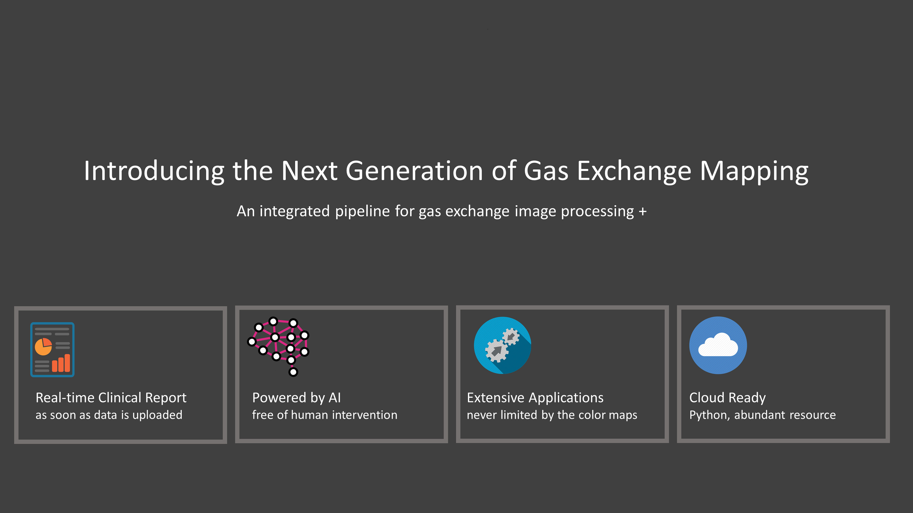
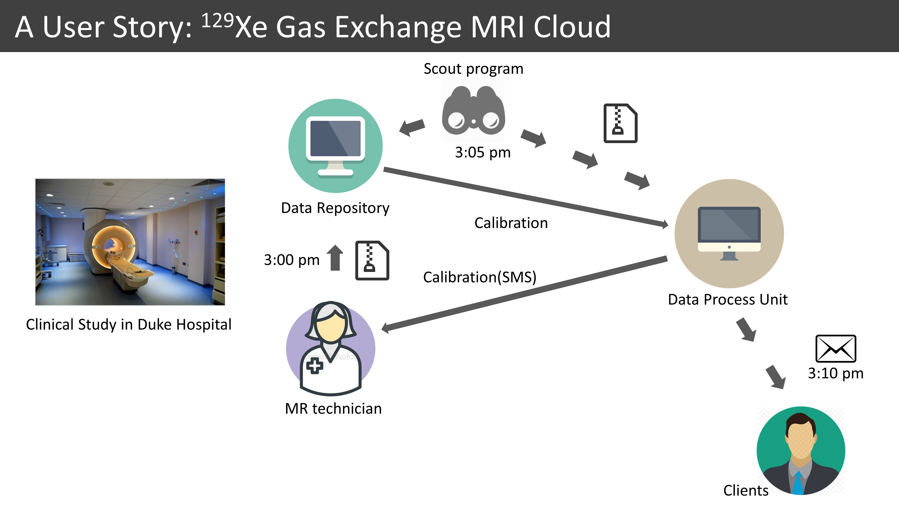

Welcome to Zmap’s documentation!¶
Zmap is a Python based program developed to facilitate 129Xe MRI scan and analyze images. The goal of Zmap is to build a fully automated analysis pipeline from the image data created from MR scanner to a clinical report that contains all meaningful information from this subject. To achieve full automation, a model of convolutional neural networks is used for segmentation. To ensure extensibility, the functions and classes are built with hierarchical structures and uniform API for easy reuse.
Figure 1. A fully automated pipeline for Gas Exchange Mapping.
{kind=link}
Currently Zmap provides functions in calibration and image process.
- The calibration requires only the calibration twix file from Siemens, and the result will be a text file created at the folder of the calibration file. A SMS text will also be sent to the pre-registered clients.
- The final clinical report, generated after the image processing, will be sent all through email to the pre-registered clients.
Figure 2. A user story of Zmap. 3 files are acquired for each scan sequentially, the calibration, the Dixon, and the BHUTE. First, when the calibration file is acquired and uploaded to a shared folder by MR technician, a scout program will detect it and launch a calibration program to calculate TE90, reference voltage amplitude and target frequency. The results will be sent back to the technician (by a text file created at the same spot in the sharefolder, as well as a SMS text to a pre-registered number). Second, when all the 3 files are acquired and uploaded, another scout program will detect them and copy them to the workstation, lauch the main Zmap program to generate a clinical report, which will be sent to the clients via email.
{kind=link}
List of contents: